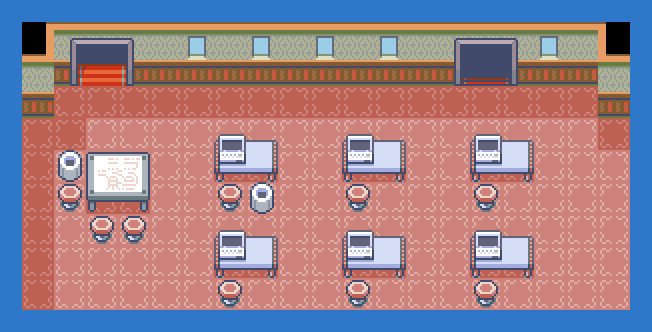
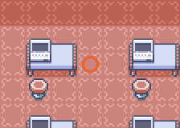

PokémonEMMA'S EMERALD
OFFICIAL Strategy Guide
Devon Corp: Fossil Revival
‹ Mirage Tower 4FQuest: Fossils: Mirage Tower and the Desert Underpass · 5 of 6Next: Desert Underpass ›
TIP
No wild Pokémon in the grass here. Time of day: M = morning (6–10), D = day (10–19), E = evening (19–20), N = night (20–6).
Event 1: Revive it

The scientist on Devon's 2F revives fossils: Root Fossil is Lileep, Claw Fossil is Anorith. Leave the building and come back to collect.

‹ Mirage Tower 4FQuest: Fossils: Mirage Tower and the Desert Underpass · 5 of 6Next: Desert Underpass ›
13